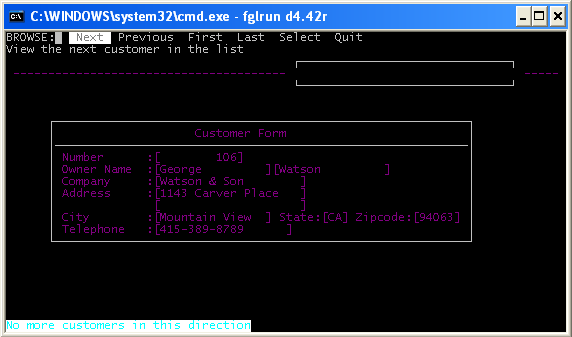
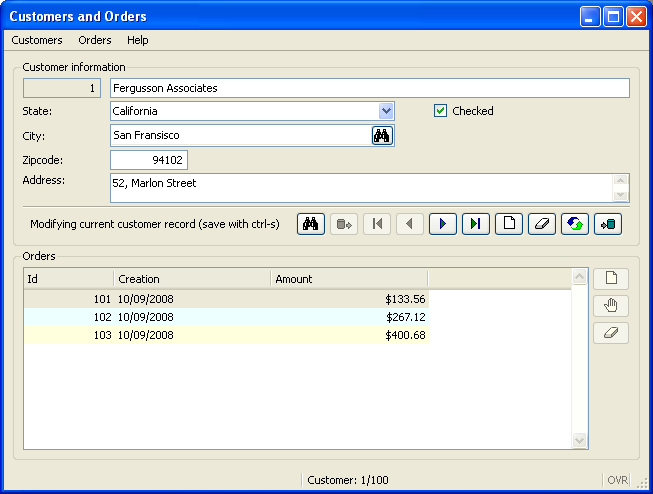
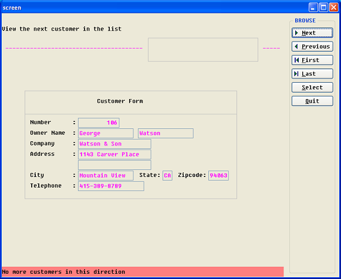
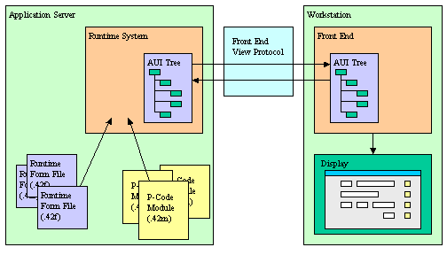
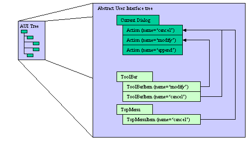

Summary:
See also: Form Files, Windows and Forms, Interaction Model.
Genero's Text User Interface has been designed for character-based terminals. This mode can be used to run your application on a text terminal hardware or in a terminal emulator.
In TUI mode, the application windows/forms will display within the current console/terminal window as shown in the next screen-shot:

By default, applications forms are displayed in GUI mode as described later in this section. In order to run your applications in text mode, set the FGLGUI environment variable to 0 (zero).
Note that you may need to configure you terminal capabilities with TERM and TERMCAP environment variables, as described later in Configuring your text terminal.
Genero is designed to provide a real graphical look and feel. Compared to the text mode interface as with Informix 4GL applications, this is a significant improvement for the end user. For example, with Genero, when using the GUI mode, you get real resizable windows when executing an OPEN WINDOW instruction.
The Graphical User Interface mode is enabled by default in Genero. You can also set the FGLGUI environment variable to 1. In GUI mode, the application will display on the front-end workstation identified with the FGLSERVER environment variable. Application windows/forms will be rendered with real GUI widgets providing a nice look-and-feel as shown in the next screen-shot:

With the GUI mode of Genero, you immediately get the benefit of standard GUI widgets and windows. Forms are rendered as real movable and resizable windows, form labels and fields become widgets using variable fonts, toolbars and pull-down menus are displayed, and error messages are displayed in the status bar. This can, however, be annoying if you have to migrate from a project that was developed with Informix 4GL or Four Js BDS products.
Genero supports the Traditional GUI mode to simplify migration from Informix 4GL or from Four Js BDS. When using this mode, Genero windows will be displayed as simple boxes in a main front-end window, as shown in the next screen-shot:

The traditional GUI mode can be enabled with the following FGLPROFILE entry:
gui.uiMode = "traditional"
By default, the Traditional GUI mode is off.
If the Traditional GUI mode is set, the OPEN WINDOW statement works differently according to the bound forms.
On the Front-End side, there is one unique main graphical window (a top-level widget called "Compatibility Window Container") created
to host all the Genero windows containing traditional forms. Traditional forms are form files which have a SCREEN section instead of the Genero specific LAYOUT section. When migrating from an Informix 4GL or FourJ's BDS project, all forms initially
contain a SCREEN section; hence all windows opened in traditional mode will appear in the Compatibility Window Container.
To renovate a form file with Genero graphical items such as group boxes, buttons and tables, a LAYOUT section must be created.
If the renovated form file is loaded via OPEN WINDOW ... WITH FORM form-file then, even in traditional mode, the freshly created
window will appear as a new top-level widget on the Front-End side. This opens a smooth migration path using the traditional mode; as a
first step, it is possible to migrate/enhance the most important forms, while keeping the rest of the application forms running in the
original rendering.
Note, however, that the following combination does not work in Traditional GUI mode:
A runtime error results, because you cannot display a form with dynamic geometry in a fixed geometry container. Only forms with a SCREEN section can be displayed at a later stage in a window that was initially opened inside the Compatibility Window Container.
When the traditional mode is enabled, you can map Shift-Fx and Control-Fx key strokes to F(x+offset) actions. The offset is defined with the gui.key.add_function entry:
gui.key.add_function = 12
This entry defines the number of function keys of the keyboard (default is 12). When defined as 12, a Shift-F1 will be received as an F13 (12+1) action event by the program, and a Control-F1 will be F25 (12*2+1).
Unlike in TUI mode or with the BDS/WTK products, Genero renders the PROMPT instruction in a separate modal window, even when the traditional GUI mode is enabled. The PROMPT window will appear on top of the Compatibility Window Container.
The Dynamic User Interface (DUI) is a global concept for a new, open User Interface programming toolkit and deployment components, based on the usage of XML standards and built-in classes.
The purpose of the DUI is to support different kinds of display devices by using the same source code, introducing an abstract definition of the user interface that can be manipulated at runtime as a tree of user interface objects. This tree is called the Abstract User Interface.
The Runtime System is in charge of the Abstract User Interface tree and the Front End is in charge of making this abstract tree visible on the screen. The Front End gets a copy of that tree which is automatically synchronized by the runtime by using the Front End Protocol.
In development, application screens are defined by Form Specification Files. These files are used by the Form Compiler to produce the Runtime Form Files that can be deployed in production environments.
The following schema describes the Dynamic User Interface concept, showing how the Abstract User Interface tree is shared by the Runtime System and the Front End:

The Abstract User Interface tree on the front-end is synchronized with the Runtime System AUI tree when a user interaction instruction takes the control. This means that the user will not see any display as long as the program is doing batch processing, until an interactive statement is reached.
For example, the following program shows nothing:
01MAIN02DEFINE cnt INTEGER03OPEN WINDOW w WITH FORM "myform"04FOR cnt=1 TO 1005DISPLAY BY NAME cnt06SLEEP 107END FOR08END MAIN
If you want to show something on the screen while the program is running in a batch procedure, you must force synchronization with the
front-end, by calling the refresh() method of the Interface built-in class:
01MAIN02DEFINE cnt INTEGER03OPEN WINDOW w WITH FORM "myform"04FOR cnt=1 TO 1005DISPLAY BY NAME cnt06CALL ui.Interface.refresh() -- Sync the front-end!07SLEEP 108END FOR09END MAIN
Warning! When the AUI trees are synchronized, only the changes are sent to the front-end. If a modification has been made that does not result in a change in the values of the attributes of a node of the tree (for example, you change the contents of an image file but keep the same name), that modification will not be sent to the front-end.
In GUI mode, when the first interactive instruction like MENU or INPUT is executed, the runtime system establishes a tcp connection to the front-end. The front-end acts as a graphical server for the runtime system.
On the runtime system side, the front-end is identified by the FGLSERVER environment variable. This variable defines the hostname of the machine where the front-end resides, and the number of the front-end instance to be used.
The syntax for FGLSERVER is hostname[:servernum]:
$ FGLSERVER=fox:1 $ fglrun myprog
The servernum parameter is a whole number that defines the instance of the front-end. It is actually defining a tcp port number, starting from 6400. For example, if servernum equals 2, the tcp port number used is 6402 (6400+2).
This is the standard/basic connection technique, but you can set up different types of configurations. For example, you can have the front-end connect to an application server via ssh, to pass through firewalls over the internet. Refer to the front-end documentation for more details.
The front-end can open a terminal session on the application server to start a program from the user workstation. This is done by using a ssh, rlogin, or telnet terminal session. When the terminal session is open, the front-end sends a couple of shell commands to set environment variables like FGLSERVER before starting the Genero program to display the application on the front-end where the terminal session was initiated.
In this configuration, front-end identification takes place. The front-end identification prevents the display of application windows on a front-end that did not start the Genero application on the server. If the front-end was not identified, it would result in an important security problem, as anyone could run a fake application that could display on any front-end and ask for a password.
Warning (Security Issue): Front-end identification is achieved by setting two environment variables in the terminal session, which identify the front-end. The runtime system sends the first identifier back when connecting to the front-end, and the front-end sends the second id in the returning connection string. The Front-end checks the first id, and refuses the connection if that id does not correspond to the original id set in the terminal session. The runtime system checks the second id send by the front-end in the connection string, and refuses the connection if that id does not correspond to the environment variable set in the terminal session. There can be a security hole if users can overwrite the program or the shell script started by the front-end terminal session. It is then possible to change the front-end identification environment variables and FGLSERVER, in order to display the application on another workstation to read confidential data. As long as basic application users do not have read and write privileges on the program files, there is no risk. To make sure that program files on the server side are protected from basic users, create a special user on the server to manage the application program files, and give other users only read access to those files. As long as basic users cannot modify programs on the server side, there is no security issue.
When initiating the connection to the front-end, if the front-end program is stopped, the host machine is down, or a firewall drops connections for the port used by Genero, the program will stop with an error after a given timeout. This timeout can be specified with this FGLPROFILE entry:
gui.connection.timeout = seconds
The default timeout is 30 seconds.
When a program has started and the runtime system waits for a user action, but the end user does not do anything, the front-end sends a 'ping' event every 5 minutes to keep the tcp connection alive. This situation can happen if the user leaves the workstation for a while without closing the application. The Front-End ping is a normal situation and part of the GUI client/server protocol. However, if the front-end program is not stopped properly (when killed by a system reboot, for example), the tcp connection is lost and the runtime system does not receive any more 'ping' events. In this case, the runtime system waits for a specified time before it stops with fatal error -8062. You can configure this timeout with an FGLPROFILE entry:
gui.protocol.pingTimeout = 800
By default, the runtime system waits for 600 seconds (10 minutes).
Warning: If you set this timeout to a value lower than the ping delay of the front-end, the program will stop with a fatal error after that timeout, even if the tcp connection is still alive. For example, with a front-end having a ping delay of 5 minutes, the minimum value for this parameter should be about 330 seconds (5 minutes + 30 seconds to make sure the client ping arrives).
GUI protocol compression uses unnecessary processor resources if the communication with the front-end is fast (for example, on a 100 Mbps Ethernet network compression is not needed). To disable compression, set this FGLPROFILE entry:
gui.protocol.format = "block"
See also Front-End Protocol.
When the Front End receives an invalid order, it stops the application. The Runtime System then stops and displays the following message:
Program stopped at 'xxx.4gl', line number yy. FORMS statement error number -6313. The UserInterface has been destroyed: <message>.
The following error messages can occur:
| Message | Description |
| Application was terminated by user | The front-end has been stopped or the user has clicked on the "Terminate application" button. |
| Unexpected interface version sent by the runtime system | The runtime system and the front-end versions are not fully compatible. |
|
The container 'container_name' already exists |
The same WCI container has been started twice. |
| The container 'container_name' was destroyed | The parent WCI container has been stopped while some children are still running |
| The container 'container_name' doesn't exist | The WCI parent of the current child doesn't exist. |
| Invalid AUI Tree: Multiple Start Menu nodes | The AUI Tree contains two Start Menu Nodes - should not happen. |
The Abstract User Interface defines a tree of objects organized by parent/child relationship. The different kinds of user interface objects are defined by attributes. The AUI tree can be serialized as text according to the XML standard notation.
The following example shows a part of an AUI tree defining a Toolbar serialized with the XML notation:
<ToolBar>
<ToolBarItem name="f5" text="List" image="list" />
<ToolBarSeparator/>
<ToolBarItem name="Query" text="Query" image="search" />
<ToolBarItem name="Add" text="Append" image="add" />
...
</ToolBar>
The objects of the Abstract User Interface tree can be queried and modified at runtime with specific built-in classes like ui.Form, provided to manipulate form elements.
The next code example gets the current window object, then gets the current form in that window, and hides a group-box form element identified by the name "gb1":
01DEFINE w ui.Window02DEFINE f ui.Form03LET w = ui.Window.getCurrent()04LET f = w.getForm()05CALL f.setElementHidden("gb1",1)
In very special cases, you can also directly access the nodes of the AUI tree by using DOM API classes like DomDocument and DomNode.
Warning: As we continue to add new features to the product we encounter
situations that may force us to modify the AUI Tree in order to add new elements/attributes.
If you are using the low level API's to directly modify the tree, your code may be slightly impacted when we release a change in the
AUI Tree structure. In order to minimize the impact of any such Abstract User
Interface changes we would like to suggest the following course of action with regards to use of the DOM/SAX
API's:
1. Modify the tree at your own discretion understanding that in the future, changes to the AUI tree may be implemented.
2. Place all custom calls to the DOM/SAX API within centralized Library functions that are accessible to all modules, as opposed to
scattering function calls throughout your code base.
3. Do not create nodes or change attributes that are not explicitly documented as modifiable.
For example, TopMenu or ToolBar nodes can be created and configured dynamically, but you should not add FormField nodes to existing
forms, or modify yourself the 'active' attribute of fields or actions.
To get the user interface nodes at runtime, the language provides different kinds of API functions or methods, according to the context. For example, to get the root of the Abstract User Interface tree, call the ui.Interface.getRootNode() method. You can also get the current form node with ui.Form.getNode() or search for an element by name with the ui.Form.findNode() method.
By tradition BDL uses uppercase keywords, such as LABEL in form files, and the examples in this documentation reflect that convention. The BDL language itself is not case-sensitive. However, XML is case-sensitive, and by convention node types use uppercase/lowercase combinations to indicate word boundaries. In BDL, therefore, the nodes and attributes of an Abstract User Interface tree are handled as follows:
Warning: If you reference Nodes or Attributes in your BDL code, you must always respect the naming conventions.
The Abstract User Interface identifies all possible actions that can be received by the current interactive instruction with a list of Action nodes. The list of possible actions are held by a Dialog node. An Action node is identified by the 'name' attribute and defines common properties such as the accelerator key, default image, and default text.
Interactive elements are bound to Action nodes by the 'name' attribute. For example, a Toolbar item (button) with the name 'cancel' is bound to the Action node having the name 'cancel', which in turn defines the accelerator key, the default text, and the default image for the button.

When an interactive element is used (such as a form field input, toolbar button click, or menu option selection), an ActionEvent node is sent to the runtime system. The name of the ActionEvent node identifies what Action occurred and the 'idRef' attribute indicates the source element of the action.
See also Front End Events for more details.
The Front End Protocol (FEP) is an internal protocol used by the Runtime System to synchronize the Abstract User Interface representation on the Front End side. This protocol defines a simple set of operations to edit the Abstract User Interface tree. This protocol is based on a command processing principle (send command, receive answer) and can be serialized to be transported over any network protocol, like HTTP for example.
Both the Abstract User Interface and the Front End Protocol are public to allow third parties to develop their own Front Ends. This enables applications to be deployed on very specific Workstations.
Refer to Front End Protocol for more details about the operations supported by this communication protocol.
This section describes special features regarding the user interface domain:
This feature allows you to define the labels of keys, to show a specific text in the default action button created for the key.
Warning: Key label definition is provided for backward compatibility, to set action/key labels you should use Action Defaults instead.
key.key-name.text = "label"
CALL FGL_SETKEYLABEL( "key-name", "label" )
KEYS
key-name = [%]"label"
[...]
[END]
CALL FGL_DIALOG_SETKEYLABEL( "key-name", "label" )
KEY key-name = [%]"label" (as field
attribute)Traditional 4GL applications use a lot of function keys and/or control keys to manage user actions. For example, in the following interactive dialog, the function key F10 is used to show a detail window:
01INPUT BY NAME myrecord.*02ON KEY (F10)03CALL ShowDetail()04END INPUT
For backward compatibility, the language allows you to specify a label to be displayed in a default action button created specifically for the key.
By default, if you do not specify a label, no action button is displayed for a function key or control key.
If the text provided for the key label is empty or NULL, the default action button will not be displayed.
The following table shows the key names recognized by the runtime system:
| Key Name | Description |
| f1 to f255 | Function keys. |
| control-a to control-z | Control keys. |
| accept | Predefined dialog validation action. |
| interrupt | Predefined dialog cancellation action (note action name is cancel, not interrupt). |
| insert | Predefined INPUT ARRAY dialog row insertion action. |
| append | Predefined INPUT ARRAY dialog row addition action. |
| delete | Predefined INPUT ARRAY dialog row deletion action. |
| help | Predefined help action. |
You can define key labels at different levels, from the default settings to a specific field, to show a specific label for the key when the focus is in that field. The order of precedence for key label definition is the following:
Warning: In Genero, you typically define action labels with Action Defaults. However, if key labels are defined, they will overwrite the text defined in Action Defaults for the corresponding key action. Note that in BDS 3.xx versions, default key labels are defined in FGLDIR/etc/fglprofile. These defaults have been commented out in Genero to have Action Defaults text applied (In Genero, by default, FGL_GETKEYLABEL() returns NULL for all keys). If you want to get the same default key labels as in BDS 3.xx, uncomment the key.* lines in FGLDIR/etc/fglprofile.
You can query the label defined at the program level with the FGL_GETKEYLABEL function and, for the current interactive instruction, with the FGL_DIALOG_GETKEYLABEL function.
The runtime system tries to open a connection to the graphical front-end according to the FGLSERVER environment variable. This requires having the front-end already started and listening to the TCP port defined according to FGLSERVER.
In some configurations, such as X11 workstations or METAFRAME/Citrix Winframe or Microsoft Windows Terminal Server, each user may want to start his own front-end to have a dedicated process. This can be done by starting the front-end automatically when the Genero program executes, according to the DISPLAY (X11) or SESSIONNAME/CLIENTNAME (WTSE) environment variables.
Automatic front-end startup settings are defined with gui.server.autostart.*
entries in FGLPROFILE.
In a first time, the runtime system tries to establish the connection
without starting the GUI server (in a normal usage, it is already started). The
GUI server (i.e. front-end) is
identified by the FGLSERVER environment variable.
If FGLSERVER is not defined, it defaults to localhost:0, except if gui.server.autostart.wsmap
entries are defined in FGLPROFILE. When wsmap entries are
defined, workstation id to GUI server id mapping takes place and FGLSERVER
defaults to localhost:n, where n is the GUI server number found
from wsmap entries.
If this first connection fails and the gui.server.autostart.cmd
entry is defined, the runtime system executes the command to start the GUI
server, then waits for n seconds as defined by gui.server.autostart.wait
entry, and after this delay tries to connect to the front-end. If the
connection fails, it tries again for a number of attempts defined by the gui.server.autostart.repeat
entry. Finally, it the last try failed, the runtime system stops with a GUI
connection error -6300.
Warning: If the gui.server.autostart.cmd entry is not defined,
neither workstation id to GUI id mapping, nor automatic front-end
startup is done.
Here is a detailed description of each gui.server.autostart
FGLPROFILE entry:
The 'cmd' entry is used to define the command to be executed to start the front-end:
gui.server.autostart.cmd = "/opt/app/gdc-2.30/bin/gdc -p %d -q -M"
Here, %d will be replaced by the TCP port the front-end must listen to.
By default the runtime system waits for two seconds before it tries to connect to the front-end. You can change this delay with the 'wait' entry:
gui.server.autostart.wait = 5 -- wait five seconds
The runtime system tries to connect to the front-end ten times. You can change this with the 'repeat' entry:
gui.server.autostart.repeat = 3 -- repeat three times
The following FGLPROFILE entries can be used to define workstation id to front-end id mapping:
gui.server.autostart.wsmap.max = 3
gui.server.autostart.wsmap.0.names = "fox:1.0,fox.sxb.4js.com:1.0"
gui.server.autostart.wsmap.1.names = "wolf:1.0,wolf.sxb.4js.com:1.0"
gui.server.autostart.wsmap.2.names = "wolf:2.0,wolf.sxb.4js.com:2.0"
The first 'wsmap.max' entry defines the maximum number of front-end identifiers to look for. The 'wsmap.N.names' entries define a mapping for each GUI server, where N is the front-end identifier. The value of those entries defines a comma-separated list of workstation names to match. If no wsmap entries are defined, the GUI server number will default to zero.
Warning: Note that for gui.server.autostart.wsmap entries, the first GUI server number starts at zero.
On X11 configurations, a workstation is identified by the DISPLAY environment variable. In the above example, "fox:1.0" identifies a workstation that will make the runtime start a front-end with the number 1.
On Windows Terminal Server, the CLIENTNAME environment variable identifies the workstation. If no corresponding front-end id can be found in the 'wsmap' entries, the front-end number defaults to the id of the session defined by the SESSIONNAME environment variable, plus one. The value of this variable has the form "protocol#id"; for example, "RDP-Tcp#4" would automatically define a front-end id of 5 (4+1).
If the front-end processes are started on the same machine as the runtime system, you do not need to set the FGLSERVER environment variable. This will then default to 'localhost:id', where id will be detected according to the 'wsmap' workstation mapping entries.
If the front-end is executed on a middle-tier machine that is different from the application server, MIDHOST for example, you can set FGLSERVER to "MIDHOST" without a GUI server id. The workstation mapping will automatically find the id according to 'wsmap' settings.
Some clients, such as the Genero Desktop Client (GDC), raise the control panel to the top of the window stack when you try to restart it. In this case the program window might be hidden by the GDC control panel. To avoid this problem, you can use the -M option to start the GDC in minimized mode.
For compatibility with IBM Informix 4gl, Genero supports the DBSCREENDUMP and DBSCREENOUT environment variables for debugging purpose, to let you do a screen shot when running in TUI mode and write the result into a file.
To enable TUI screen shot, set either DBSCREENDUMP or DBSCREENOUT to the name of the output file, then run your Genero program with FGLGUI=0 set and press the CONTROL-P key to dump the current screen. Each time you press CONTROL-P the output file will be overwritten.
The DBSCREENDUMP variable writes the screen with escape sequences of TTY attributes, while DBSCREENOUT writes only the characters displayed on the screen, which makes the output more readable.
If both variables are set, the runtime will generate both output files. You should however use different file names, otherwise the output is undefined.
This section covers topics about text terminal configuration when using the TUI mode.
To run a Genero application in text mode, you must define the FGLGUI environment variable to 0.
On UNIX platforms, the TERM environment variable must be set and define the terminal type/name. For example, if you execute the application in an xterm window, set TERM=xtermix. The Genero runtime system will search for the terminal capabilities in the file defined by the TERMCAP environment variable.
On Windows platforms, you can run applications in text mode inside a CMD Console Window. You must not set the TERM environment variable in this case.
Genero provides a default file defining terminal capabilities in FGLDIR/etc/termcap, but you can modify this file or add new terminal definitions. If you plan to modify the default termcap file, we strongly recommend that you make a copy of the original termcap file and point to the new file with the TERMCAP environment variable.
Note that terminal type and terminal capabilities definition is not a Genero-specific configuration: TERM and TERMCAP (or TERMINFO) are also used by other UNIX applications and commands. However, Genero only supports TERMCAP databases (TERMINFO will be supported in a future version).
In this section we will briefly describe the syntax of the termcap file. For a complete definition please refer to your operating system documentation (see man pages describing the termcap file syntax).
All termcap entries contain a list of terminal names, followed by a list of terminal capabilities, in the following format:
Example: xterm terminal definition:
xterm|xterm terminal emulator:\ :km:mi:ms:xn:pt:\ :co#80:li#24:\ :is=\E[r\E[m\E[2J\E[H\E[?7h\E[?1;3;4;6l:\ ...
Termcap entries begin with one or more names for the terminal, each separated by a vertical ( | ) bar. Any one of these names can be used for access to the termcap entry.
Boolean capabilities are two-character codes indicating whether a terminal has a specific feature. If the Boolean capability exists in the termcap entry, the terminal has that particular feature. For example:
:bs:am: # bs backspace with CTRL-H # am automatic margins
Numeric capabilities are two-character codes followed by a sharp symbol ( # ) and a value. For example:
:co#80:li#24: # co number of columns in a line # li number of lines on the screen
Genero BDL assumes that the value is zero for any numeric capabilities that are not listed,
String capabilities specify a sequence that can be used to perform a terminal operation.
A string capability is a two-character code, followed by an equal sign ( = ) and a string ending at the next delimiter ( : ).
Most termcap entries include string capabilities for clearing the screen, arrow keys, cursor movement, underscore, function keys, etc. For example, some string capabilities for a Wyse 50 terminal are shown below:
:ce=\Et:cl=\E*:\ :nd=^L:up=^K:\ :so=\EG4:se=\EG0: # ce=\Et clear to end of line # cl=\E* clear the screen # nd=^L non-destructive cursor right # up=^K up one line # so=\EG4 start stand-out # se=\EG0 end stand-out
In TUI mode, Genero BDL recognizes function keys F1 through F36. These keys correspond to the termcap capabilities k0 through k9, followed by kA through kZ.
The termcap entry for these capabilities is the sequence of ASCII characters your terminal sends when you press the function keys (or any other keys you choose to use as function keys).
The next example shows some function key definitions for the xterm terminal:
k0=\E[11~:k1=\E[12~:k2=\E[13~:k3=\E[14~:\ ... k9=\E[21~:kA=\E[23~:kB=\E[24~:\
Dialog action keys for insert, delete and list navigation can be defined with the following capabilities:
Note: You can also use the OPTIONS statement to name other function keys or CTRL keys for these operations.
Genero BDL uses the graphics characters in the termcap file when you specify a window border in an OPEN WINDOW statement.
Genero BDL uses characters defined in the termcap file to draw the border of a window. If no characters are defined in this file, the runtime system uses the hyphen ( - ) for horizontal lines, the vertical bar ( | ) for vertical lines, and the plus sign ( + ) for corners.
Steps to define the graphical characters for window borders for your terminal type:
For terminals without graphics capabilities, you must enter a blank value for the gs and ge capabilities. For gb, enter the characters you want Genero to use for the window border. The following example shows possible values for gs, ge, and gb in an entry for a terminal without graphics capabilities:
:gs=:ge=:gb=.|.|_|:
With these settings, window borders would be drawn using underscores ( _ ) for horizontal lines, vertical bars ( | ) for vertical lines, periods ( . ) for the top corners, and vertical bars ( | ) for the lower corners.
In TUI mode, a Genero program can be written either for a monochrome or a color terminal, and then you can run the program on either type of terminal. If you set up the termcap files as described here, the color attributes and the intensity attributes are related, as shown in the next table:
| Number | Color | Intensity | Note |
| 0 | WHITE | NORMAL | |
| 1 | YELLOW | BOLD | |
| 2 | MAGENTA | BOLD | |
| 3 | RED | BOLD (*) | If the keyword BOLD is indicated as the attribute, the field will be RED on a color terminal |
| 4 | CYAN | DIM | |
| 5 | GREEN | DIM | |
| 6 | BLUE | DIM (*) | If the keyword DIM is indicated as the attribute, the field will be BLUE on a color terminal |
| 7 | BLACK | INVISIBLE |
The background for colors is BLACK in all cases. In either color or monochrome mode, you can add the REVERSE, BLINK, or UNDERLINE attributes if your terminal supports them.
Genero uses a parameterized string capability named ZA in the termcap file to determine color assignments. Unlike other termcap string capabilities that you set to a literal sequence of ASCII characters, ZA is a function string that depends on the following four parameters:
| Parameter | Name | Description |
| 1 | p1 | Color number between 0 and 7 (see above table). |
| 2 | p2 | 0 = Normal; 1 = Reverse. |
| 3 | p3 | 0 = No-Blink; 1 = Blink. |
| 4 | p3 | 0 = No-underscore; 1 = Underscore. |
ZA uses the values of these four parameters and a stack machine to determine which characters to send to the terminal. The ZA function is called, and these parameters are evaluated, when a color or intensity attribute is encountered in a Genero program. Use the information in your terminal manual to set the ZA parameters to the correct values for your terminal.
The ZA string uses stack operations to push values onto the stack or to pop values off the stack. Typically, the instructions in the ZA string push a parameter onto the stack, compare it to one or more constants, and then send an appropriate sequence of characters to the terminal. More complex operations are often necessary; by storing the display attributes in static stack machine registers (named a through z), you can have terminal-specific optimizations.
The different stack operators that you can use to write the descriptions are summarized below. For a complete discussion of stack operators, see your operating system documentation.
Each arithmetic operator pops the top two values from the stack, performs an operation, and pushes the result on the stack.
The following bit operators pop the top two values from the stack, perform an operation, and push the result on the stack:
The following unary operator pops the top value from the stack, performs an operation, and pushes the result on the stack:
The following logical operators pop the top two values from the stack, perform an operation, and push the logical result (0 for false or 1 for true) on the stack:
The following unary operator pops the top value from the stack, performs an operation, and pushes the logical result (0 or 1) on the stack.
The conditional statement has the following format:
%? expr %t thenpart %e elsepart %;
The %e elsepart is optional. You can nest conditional statements in the thenpart or the elsepart.
When Genero evaluates a conditional statement, it pops the top value from the stack and evaluates it as either true or false. If the value is true, the runtime performs the operations after the %t; otherwise it performs the operations after the %e (if any).
For example, the expression:
%?%p1%{3}%=%t;31%;
is equivalent to:
if p1 = 3 then print ";31"
Assuming that p1 in the example has the value 3, Genero would perform the following steps:
The ZA sequence for the ID Systems Corporation ID231 (color terminal) is:
ZA =
\E[0; # Print lead-in
%?%p1%{0}%=%t%{7} # Encode color number (translate color number to number for the ID231 term)
%e%p1%{1}%=%t%{3} #
%e%p1%{2}%=%t%{5} #
%e%p1%{3}%=%t%{1} #
%e%p1%{4}%=%t%{6} #
%e%p1%{5}%=%t%{2} #
%e%p1%{6}%=%t%{4} #
%e%p1%{7}%=%t%{0}%; #
%?%p2%t30;%{40}%+%2d # if p2 is set, print ’30’ and ’40’ + color number (reverse)
%e40;%{30}%+%2d%; # else print ’40’ and ’30’ + color number (normal)
%?%p3%t;5%; # if p3 is set, print 5 (blink)
%?%p4%t;4%; # if p4 is set, print 4 (underline)
m # print ’m’ to end character sequence